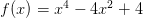

3.4 Método de Newton-Raphson
Nesta seção, apresentamos o método de Newton-Raphson4 5 para calcular o zero de funções reais de uma variável real.
Assumimos que  é um zero de uma dada função
é um zero de uma dada função  continuamente
diferenciável, i.e.
continuamente
diferenciável, i.e.  . Afim de usar a iteração do ponto fixo, observamos
que, equivalentemente,
. Afim de usar a iteração do ponto fixo, observamos
que, equivalentemente,  é um ponto fixo da função:
é um ponto fixo da função:
 |
onde  é uma função arbitrária que queremos escolher de forma que a
iteração do ponto fixo tenha ótima taxa de convergência.
é uma função arbitrária que queremos escolher de forma que a
iteração do ponto fixo tenha ótima taxa de convergência.
Do Teorema do ponto fixo temos que a taxa de convergência é dada em
função do valor absoluto da derivada de  . Calculando a derivada
temos:
. Calculando a derivada
temos:
 |
No ponto  , temos:
, temos:
 |
Como  , temos:
, temos:
 |
Sabemos que o processo iterativo converge tão mais rápido quanto menor for
 nas vizinhanças de
nas vizinhanças de  . Isto nos leva a escolher:
. Isto nos leva a escolher:
 |
e, então, temos:
 |
se  .
.
A discussão acima nos motiva a introduzir o método de Newton, cujas iterações são dada por:
 |
sendo  uma aproximação inicial dada.
uma aproximação inicial dada.
3.4.1 Interpretação geométrica
Seja dada uma função  conforme na Figura 3.5. Para tanto, escolhemos
uma aproximação inicial
conforme na Figura 3.5. Para tanto, escolhemos
uma aproximação inicial  e computamos:
e computamos:
 |
Geometricamente, o ponto  é a interseção da reta tangente ao gráfico da
função
é a interseção da reta tangente ao gráfico da
função  no ponto
no ponto  com o eixo das abscissas. Com efeito, a equação
desta reta é:
com o eixo das abscissas. Com efeito, a equação
desta reta é:
 |
Assim, a interseção desta reta com o eixo das abscissas ocorre quando
( ):
):
 |

Ou seja, dado  a próxima aproximação
a próxima aproximação  é o ponto de interseção
entre o eixo das abscissas e a reta tangente ao gráfico da função no ponto
é o ponto de interseção
entre o eixo das abscissas e a reta tangente ao gráfico da função no ponto
 . Observe a Figura 3.5.
. Observe a Figura 3.5.
3.4.2 Análise de convergência
Seja  um função com derivadas primeira e segunda contínuas tal que
um função com derivadas primeira e segunda contínuas tal que
 e
e  . Seja também a função
. Seja também a função  definida como:
definida como:
 |
Expandimos em série de Taylor em torno de  , obtemos:
, obtemos:
 |
Observamos que:

 |
Com isso, temos:
 |
ou seja:
 |
com constante  . Isto mostra que o método de Newton tem taxa
de convergência quadrática. Mais precisamente, temos o seguinte
teorema.
. Isto mostra que o método de Newton tem taxa
de convergência quadrática. Mais precisamente, temos o seguinte
teorema.
Teorema 3.4.1 (Método de Newton). Sejam ![2
f ∈ C ([a,b])](main1332x.png) com
com  tal
que
tal
que  e:
e:
![′ ′′
m := xm∈i[an,b]|f (x)| > 0 e M := xm∈a[xa,b]|f (x )|.](main1335x.png) |
Escolhendo  tal que:
tal que:
 |
definimos a bacia de atração do método de Newton pelo conjunto:
![K ρ(x*) := {x ∈ ℝ; |x - x*| ≤ ρ} ⊂ [a,b].](main1338x.png) |
Então, para qualquer  a iteração do método de Newton:
a iteração do método de Newton:
 |
fornece uma sequência  que converge para
que converge para  , i.e.
, i.e.  quando
quando
 . Além disso, temos a seguinte estimativa de erro a priori:
. Além disso, temos a seguinte estimativa de erro a priori:
 |
e a seguinte estimativa de erro a posteriori:
 |
 ,
,  , temos:
, temos:
![n+1 * (n) f(x(n))- * ---1---[ (n) * (n) ′ (n)]
x - x = x - f′(x (n)) - x = - f(x (n)) f (x ) + (x - x )f (x .](main1349x.png) | (3.2) |
Agora, para estimar o lado direito desta equação, usamos o polinômio de Taylor
de grau  da função
da função  em torno de
em torno de  , i.e.:
, i.e.:
 |
Pela mudança de variável  , observamos que o resto deste
polinômio de Taylor na forma integral é igual a:
, observamos que o resto deste
polinômio de Taylor na forma integral é igual a:
 |
Assim, da cota da segunda derivada de  , temos:
, temos:
 | (3.3) |
Se  , então de (3.2) e (3.3) temos:
, então de (3.2) e (3.3) temos:
 | (3.4) |
Isto mostra que se  , então
, então  , i.e.
, i.e.  para todo
para todo  .
.
Agora, obtemos a estimativa a priori de (3.4.2), pois:
 |
Logo:
 |
donde também vemos que  quando
quando  , pois
, pois  .
.
Por fim, para provarmos a estimativa a posteriori tomamos a seguinte expansão em polinômio de Taylor:
 |
Aqui, temos:
 |
e, então, conforme acima:
 |
Com isso e do Teorema do valor médio, concluímos:
 |

 da bacia de atração
da bacia de atração  para a
função
para a
função  restrita ao intervalo
restrita ao intervalo ![[0,π∕2 ]](main1377x.png) .
.
Solução. O raio da bacia de atração é tal que:
 |
onde  e
e  com o mínimo e o máximo tomados
em um intervalo
com o mínimo e o máximo tomados
em um intervalo ![[a, b]](main1381x.png) que contenha o zero da função
que contenha o zero da função  . Aqui, por exemplo,
podemos tomar
. Aqui, por exemplo,
podemos tomar ![[a,b] = [0,π ∕2]](main1383x.png) . Como, neste caso,
. Como, neste caso,  , temos
que
, temos
que  . Também, como
. Também, como  , temos
, temos  . Assim,
concluímos que
. Assim,
concluímos que  (lembrando que
(lembrando que ![K ρ(x*) ⊂ [0,π ∕2]](main1389x.png) ). Ou seja, neste caso
as iterações de Newton convergem para o zero de
). Ou seja, neste caso
as iterações de Newton convergem para o zero de  para qualquer escolha da
aproximação inicial
para qualquer escolha da
aproximação inicial ![(1)
x ∈ [0,π∕2 ]](main1391x.png) .
.

Exercícios
E 3.4.1. Considere o problema de calcular as soluções positivas da equação:
 |
- Use o método gráfico para isolar as duas primeiras raízes positivas em pequenos intervalos. Use a teoria estudada em aula para argumentar quanto à existência e unicidade das raízes dentro intervalos escolhidos.
- Calcule o número de iterações necessárias para que o método da
bisseção aproxime cada uma das raízes com erro absoluto inferior a
 . Calcule as raízes por este método usando este número de passos.
. Calcule as raízes por este método usando este número de passos.
- Calcule cada uma das raízes pelo método de Newton com oito dígitos significativos e discuta a convergência comparando com o item b).
Obs: Alguns alunos encontraram como solução  e
e  .
O que eles fizeram de errado?
.
O que eles fizeram de errado?
E 3.4.2. Isole e encontre as cinco primeiras raízes positivas da equação com 6 dígitos corretos através de traçado de gráfico e do método de Newton.

 . Fique atento.
. Fique atento.
Resposta.  ;
;  ;
;  ;
;  ;
;  .
.
E 3.4.3. Encontre as raízes do polinômio  através do método de Newton. O que você observa em relação ao erro obtido? Compare com a situação do problema 3.2.6.
E 3.4.4. Encontre as raízes reais do polinômio  isolando-as pelo método do gráfico e depois usando o método de Newton.
Expresse a solução com 7 dígitos significativos.
isolando-as pelo método do gráfico e depois usando o método de Newton.
Expresse a solução com 7 dígitos significativos.
Resposta.  ,
,  ;
;  .
.
E 3.4.5. Considere o método de Newton aplicado para encontrar a raiz de
 . O que acontece quando
. O que acontece quando  ? Escolha um valor
adequado para inicializar o método e obter a única raiz real desta equação.
? Escolha um valor
adequado para inicializar o método e obter a única raiz real desta equação.
E 3.4.6. Justifique a construção do processo iterativo do método de Newton através do conceito de estabilidade de ponto fixo e convergência do método da iteração. Dica: Considere os problemas 3.3.19 e 3.3.20.
E 3.4.7. Entenda a interpretação geométrica ao método de Newton.
Encontre uma valor para iniciar o método de Newton aplicado ao problema
 tal que o esquema iterativo divirja.
tal que o esquema iterativo divirja.
Resposta.  .
.
E 3.4.8 (title= Computação). Aplique o método de Newton à função
 e construa um esquema computacional para calcular a inversa
de
e construa um esquema computacional para calcular a inversa
de  com base em operações de multiplicação e soma/subtração.
com base em operações de multiplicação e soma/subtração.
E 3.4.9 (title=Computação). Aplique o método de Newton à função
 e construa um esquema computacional para calcular
e construa um esquema computacional para calcular  para
para  com base em operações de multiplicação e soma/subtração.
com base em operações de multiplicação e soma/subtração.
E 3.4.10. Considere a função dada por


- (1.5) Use o teorema do ponto fixo para provar que se
 pertence ao
intervalo
pertence ao
intervalo ![[1,3 ]](main1421x.png) , então a sequência dada iterativamente por
, então a sequência dada iterativamente por

 , de
, de  . Construa a iteração
. Construa a iteração
 e obtenha numericamente o valor do ponto fixo
e obtenha numericamente o valor do ponto fixo  .
Expresse a resposta com 5 algarismos significativos corretos.
.
Expresse a resposta com 5 algarismos significativos corretos.
- (1.0) Construa a iteração do método de Newton para encontrar
 ,
explicitando a relação de recorrência e iniciando com
,
explicitando a relação de recorrência e iniciando com  . Use
o Scilab para obter a raiz e expresse a resposta com oito dígitos
significativos corretos.
. Use
o Scilab para obter a raiz e expresse a resposta com oito dígitos
significativos corretos.
* As versões do livro disponíveis no site podem estar desatualizadas, veja a versão PDF atual no repositório GitHub oficial do projeto.
- IME - UFRGS